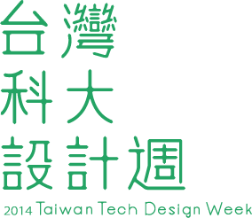
前言 │ What is TTDW ?
台灣科大設計週（Taiwan Tech Design Week, TTDW）為台灣科技大學工商業設計系暨創意設計系一年一度最重要的活動，
於2012年開始，我們將往年的短期教學成果展覽，
擴大為一週的校際設計嘉年華，
並加入表演、講座、工作坊、電影欣賞，致力標舉臺科設計的品牌特色，
同時建立一個學生在課堂之外大展身手的舞台。 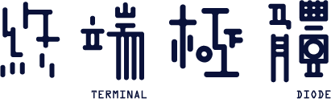 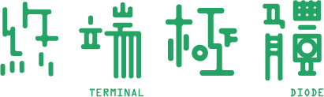
終端極體 │ Terminal Diode
2014 台灣科大設計週主題為《終端極體》。五十年後的世界會是如何？我們被科技綁架，
我們該如何繼續解讀自己的生活。今年我們以未來為主題，
試圖用另一個角度來檢視自己，看到更遠的世界。
訊息傳遞來───去，崩壞解碼
試圖告訴未來：關於我們、關於→←↕◄►
我們所不知道的那些
──────────────────
如果有一天，我們只剩下
我們看不懂
的 ■ ■ ■
那麼該如何繼續解讀
？
活動時程
| 開幕茶會 | 5/3 (六) | 17:00 ─ 19:00 | 開幕茶會 | T2第二教學大樓 3F 灰磚設計廣場 | |
| 18:30 ─ 20:00 | 星光展導覽 | ||||
| 學生作品展 | 5/3 (六) ─ 5/11 (日) | 10:00 ─ 19:00 | 「終端極體」 工商業設計系/創意設計學士班 大一至大三 |
T2第二教學大樓 3F 灰磚設計廣場 | |
| 系列講座 | 5/4 (日) | 14:00 ─ 15:45 | 彭星凱 | 設計的可能性：封面設計的思考哲學 | E2-324 |
| 5/4 (日) | 16:00 ─ 17:45 | 劉辰岫 | 人與科技 | ||
| 系列影展 | 5/6 (二) | 19:30 ─ 21:50 | 2001：太空漫遊 (1968) [140 min] | 灰磚設計廣場 | |
| 5/9 (五) | 19:30 ─ 21:10 | Tron (1982) [100 min] | |||
| 工作坊 | 5/10 (六) ─ 5/11 (日) | 10:00 ─ 14:00 | 吳俊儀 莊孟翰 |
氰版印刷記事本製作 | E2-324 |
| 畢業校內展 | 5/8 (四) ─ 5/10 (六) | 10:00 ─ 18:00 | 「次類思考」 第十四屆工商業設計系/創意設計學士班 大四畢業製作校內展 |
IB國際大樓一樓 |
學生作品展
延續傳統展出「工商業設計系成果展」，發表系上課程教學的成果，從這個課程優秀的作品的作品中透見台科設計在教學上的重視，讓系內同學可以彼此切磋琢磨，學弟妹可以看見學長姐成長的軌跡與方向，學長姐可以因著一屆比一屆優秀的學弟妹，自我督促。
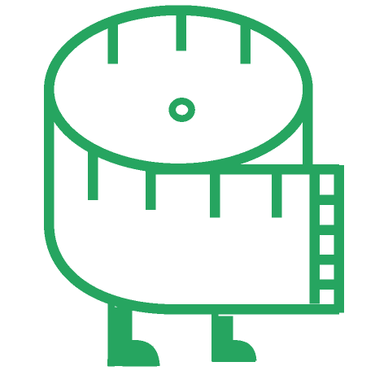
動畫設計
廣告設計
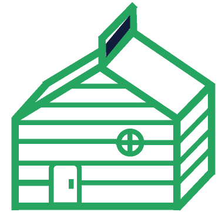
包裝設計
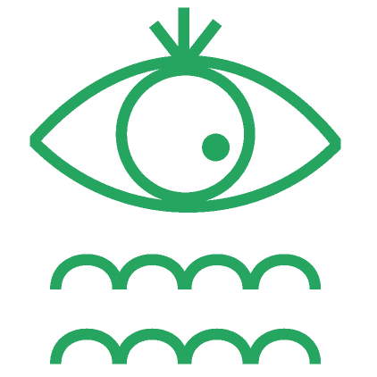
視覺傳達
編排設計
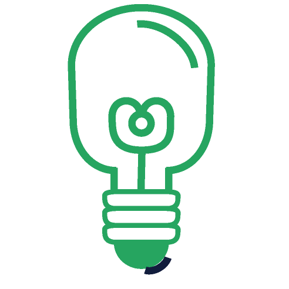
產品設計
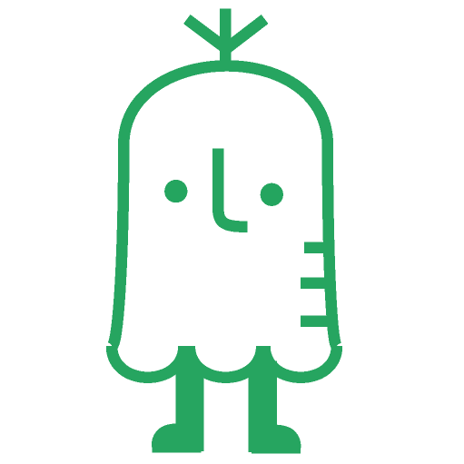
造形設計
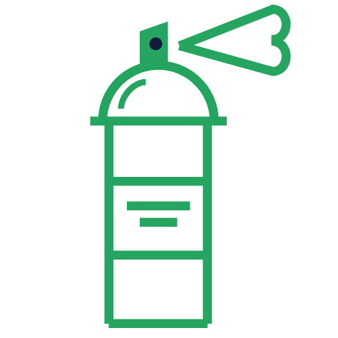
模型製作
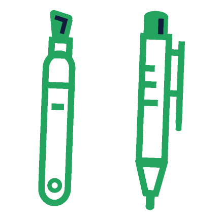
表現技法
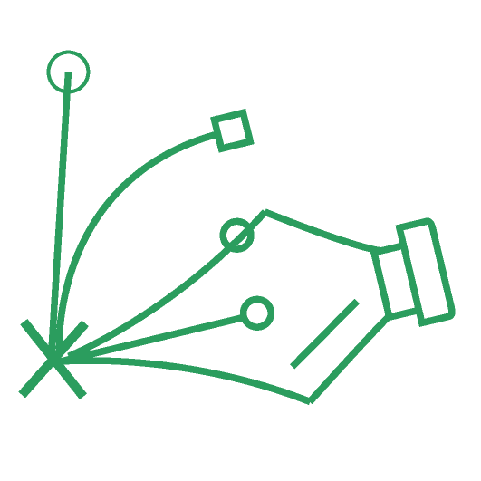
電腦輔助
基礎攝影
專題攝影
微電影設計
設計素描
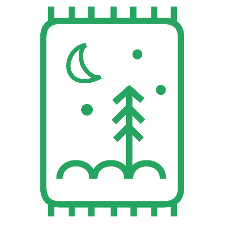
設計繪畫
設計概論
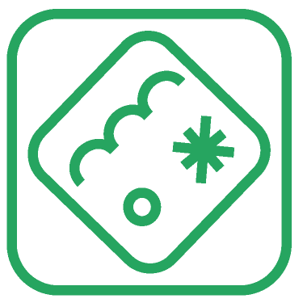
圖像化界面
網站規劃
系列講座
彭星凱
空白地區 | Fi (Peng, Hsing Kai)
設計的可能性：封面設計的思考哲學
去年某位出版社總編寄來的信裡，最後寫了一句話：「希望你繼續為了增加書籍的『附加價值』而努力」。事實上我當時覺得這說法挺酷的，但經歷幾次學習自我認同的過程再回想，才開始質疑，為何我們會認為設計是「附加價值」而不是「產品價值」呢？設計師該以什麼樣的態度來面對產品、包裝產品；或如何面對設計、甚至包裝設計？我們總以設計師自居，但我們是否真的瞭解什麼是「設計」？
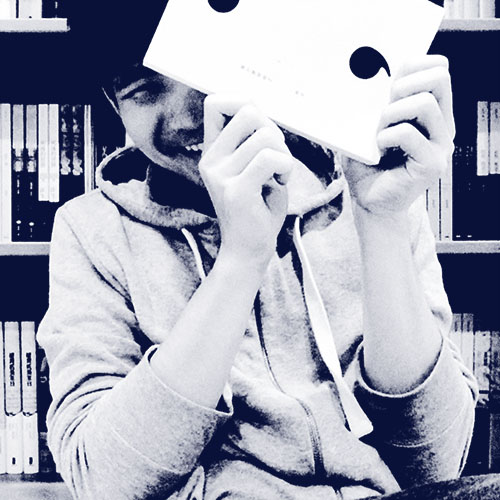
5/4
14:00 ─ 15:45劉辰岫 Dr.i
人與科技
科學和藝術向來被視為兩個互不相關的領域，但其本質或者甚至工作形態上卻很相似，而兩者之間的關聯直接影響到本世紀的設計者所著重的核心原點與工具的選擇。本演講將以實際地經驗與作品來論述此關聯性，並且指出什麼是將人文與科技結合的關鍵概念。
5/4
16:00 ─ 17:45系列影展
2001：太空漫遊 (1968) Stanley Kubrick
《2001：太空漫遊》在1968年推出，由 Stanley Kubrick 導演，是一部極具爭議卻又評價崇高的科幻電影。故事是根據科幻小說家 Arthur Clark 所撰寫的各種短篇小說的部分內容所改編，包括1950年的短篇《前哨》，並間接引用《童年末日》中 Arthur Clark 大力提倡的人類優越論點為其題材，從器物與科技發展進程上，大膽地假設一文明終點。
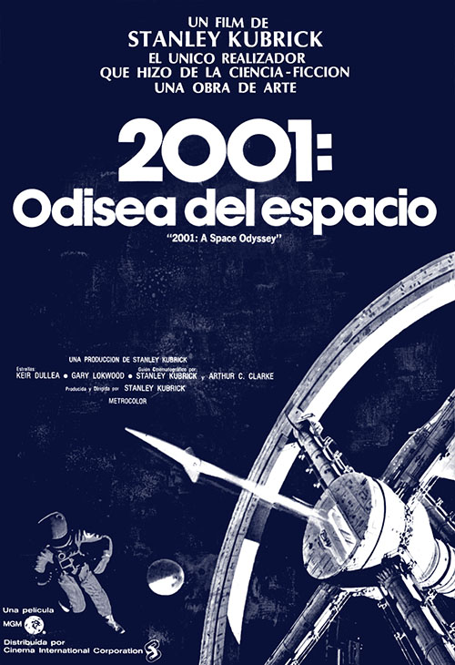
5/6
19:30 ─ 21:50Tron (1982) Steven Lisberger
《Tron》是一部1982年迪士尼科幻電影。由 Steven Lisberger 執導、Jeff Bridges 等主演，及台灣動畫公司「宏廣」負責了絕大部分的手繪上色工程。本片另於2010年推出續集 ──《創：光速戰記》。故事敘述一家電腦公司開發了人工智慧程式，但中央控制程式不再乖乖聽人操控而想掌控世界。被這家公司解僱的一位電腦天才 Kevin Flynn 在好友同事 Alan Bradley 的求助下，潛進公司電腦要破解這內部連線系統的運作方式，但他卻意外被吸入電腦當中，因此 Kevin 必須要跟好友 Alan 所創造出的好程式「創」（Tron）一同並肩作戰，透過內部的連線潛進中央控制系統去進行破壞，並要與外界取得聯繫，才能讓他脫離電子世界。
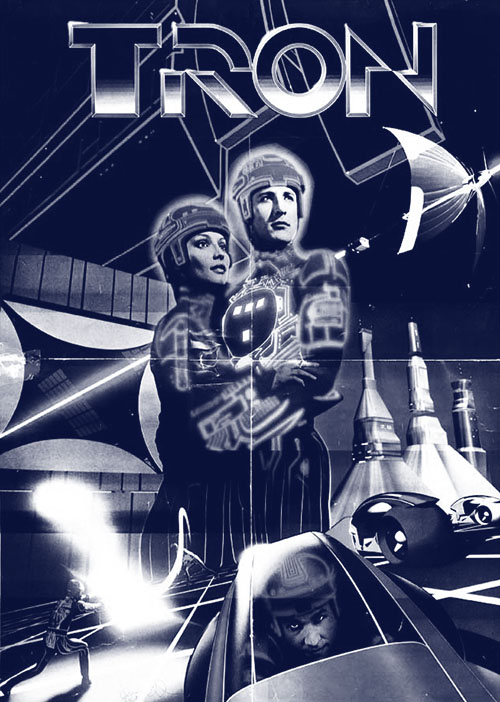
5/9
19:30 ─ 21:10工作坊
莊孟翰、吳俊儀
氰版印刷記事本製作線上報名
結合氰版印刷與裝訂，做出一本以氰版印刷封面的記事本；藉由此次活動，學習相關技術，以期能應用在未來的表現形式，同時激勵靈感，使設計更加活絡多元。● 參加限額 20 人，線上報名成功後將以電子郵件通知與說明所需用具。